TensorFlow Basic¶
This chapter describes basic operations in TensorFlow.
Prerequisites:
Basic Python operations (assignments, branch & loop statements, importing libraries)
NumPy , a commonly used Python library for scientific computing. TensorFlow 2.X is integrated closely with NumPy.
Vectors & Matrices operations (matrix addition & subtraction, matrix multiplication with vectors & matrices, matrix transpose, etc., Quiz: 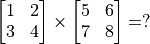)
Derivatives of functions , derivatives of multivariable functions (Quiz: 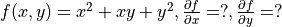)
Gradient descent that searches local minima of a function.
TensorFlow 1+1¶
In the beginning, we can simply regard TensorFlow as a library for scientific computing (like Numpy in Python).
First, let us import TensorFlow:
import tensorflow as tf
Warning
This handbook is based on the Eager Execution mode of TensorFlow. In TensorFlow 1.X, you MUST run tf.enable_eager_execution() after importing it to enable Eager Execution mode. In TensorFlow 2.X, the Eager Execution is default thus you do not need to run tf.enable_eager_execution(). (However, if you want to disable it, you should run tf.compat.v1.disable_eager_execution().)
TensorFlow uses tensors as its basic elements of data. Tensors in TensorFlow are conceptually equal to multidimensional arrays. We can use them to describe scalars, vectors, matrices and so on. Here are some examples:
# Declare a random float (scalar).
random_float = tf.random.uniform(shape=())
# Declare a zero vector with two elements.
zero_vector = tf.zeros(shape=(2))
# Declare two 2*2 constant matrices A and B.
A = tf.constant([[1., 2.], [3., 4.]])
B = tf.constant([[5., 6.], [7., 8.]])
A tensor have three important attributes: shape, data type and value. You can use the shape 、 dtype attribute and the numpy() method to fetch them. For example:
# View the shape, type and value of matrix A.
print(A.shape) # Output (2, 2), which means the number of rows and cols are both 2.
print(A.dtype) # Output <dtype: 'float32'>.
print(A.numpy()) # Output [[1. 2.]
# [3. 4.]].
Tip
Most of the TensorFlow API functions will infer the data type automatically from the input (tf.float32 in most cases). However, you can add the parameter dtype to assign the data type manually. For example, zero_vector = tf.zeros(shape=(2), dtype=tf.int32) will return a tensor with all elements in type of tf.int32.
The numpy() method of a tensor is to return a NumPy array whose value is equal to the value of the tensor.
There are lots of operations in TensorFlow so that we can obtain new tensors as the result of operations between given tensors. For example:
C = tf.add(A, B) # Compute the elementwise sum of A and B.
D = tf.matmul(A, B) # Compute the multiplication of A and B.
After the operations, the value of C and D are:
tf.Tensor(
[[ 6. 8.]
[10. 12.]], shape=(2, 2), dtype=float32)
tf.Tensor(
[[19. 22.]
[43. 50.]], shape=(2, 2), dtype=float32)
So we can see that we have successfully used tf.add() to compute 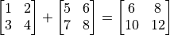, and have used tf.matmul() to compute 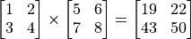.
Automatic differentiation mechanism¶
In machine learning, we often need to compute derivatives of functions. TensorFlow provides the powerful Automatic differentiation mechanism for computing derivatives. The following codes show how to use tf.GradientTape() to computer the derivative of the function  at
at  :
:
import tensorflow as tf
x = tf.Variable(initial_value=3.)
with tf.GradientTape() as tape: # All calculation steps will be recorded within the context of tf.GradientTape() for differentiation.
y = tf.square(x)
y_grad = tape.gradient(y, x) # Compute the derivative of y with respect to x.
print([y, y_grad])
Output:
[array([9.], dtype=float32), array([6.], dtype=float32)]
Here x is a variable initialized to 3, declared by tf.Variable(). Same as an ordinary tensor, a variable also has three attributes: shape, data type and value. An initialization is required before using a variable, which can be specified by the parameters initial_value in tf.Variable(). Here x is initialized to 3. 1. One significant difference between the variables and the tensors is the former can be used to differentiate by the automatic differentiation mechanism of TensorFlow by default, which is often used to define parameters of ML models.
tf.GradientTape() is an automatic differentiation recorder, in which variables and calculation steps are automatically recorded. In the previous example, the variable x and the step y = tf.square(x) were recorded automatically, thus the derivative of the tensor y with respect to the variable x can be obtained by y_grad = tape.gradient(y, x).
The more common case in machine learning is partial differentiation of multivariable functions as well as differentiation of vectors and matrices. TensorFlow can handle these as well. The following codes show how to obtain the partial derivative of the function  for
for  respectively by
respectively by tf.GradientTape() where 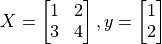.
X = tf.constant([[1., 2.], [3., 4.]])
y = tf.constant([[1.], [2.]])
w = tf.Variable(initial_value=[[1.], [2.]])
b = tf.Variable(initial_value=1.)
with tf.GradientTape() as tape:
L = 0.5 * tf.reduce_sum(tf.square(tf.matmul(X, w) + b - y))
w_grad, b_grad = tape.gradient(L, [w, b]) # Compute the partial derivative of L(w, b) with respect to w and b.
print([L.numpy(), w_grad.numpy(), b_grad.numpy()])
Output:
[62.5, array([[35.],
[50.]], dtype=float32), array([15.], dtype=float32)]
tf.square() here squared each element of the input tensor without altering its shape. tf.reduce_sum() summed up all the elements of the input tensor, outputing a scalar tensor with a none shape (the dimensions for sum can be specified by the parameter axis, without which all elements will be summed up by default). There are a large number of tensor operation APIs in TensorFlow, including mathematical operations, tensor shape operations (e.g., tf.reshape()), slicing and concatenation (e.g., tf.concat()), etc. Further information can be acquired by viewing the TensorFlow official API documentaion 2.
From the output we can see TensorFlow has helped us obtained that
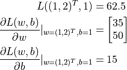
A basic example: Linear regression¶
Basics
UFLDL Tutorial, Linear Regression.
Consider a practical problem. The estate price of a city between 2013 and 2017 are listed below:
Year |
2013 |
2014 |
2015 |
2016 |
2017 |
Price |
12000 |
14000 |
15000 |
16500 |
17500 |
Now we wish to perform a linear regression on this data, that is, use the linar model  to fit the data above, where
to fit the data above, where a and b are parameters yet to be determined.
First we define the data and conduct basic normalization.
import numpy as np
X_raw = np.array([2013, 2014, 2015, 2016, 2017], dtype=np.float32)
y_raw = np.array([12000, 14000, 15000, 16500, 17500], dtype=np.float32)
X = (X_raw - X_raw.min()) / (X_raw.max() - X_raw.min())
y = (y_raw - y_raw.min()) / (y_raw.max() - y_raw.min())
In the following steps we use gradient descent to find the parameters a and b in the linear model 3.
Recall the basic knowledge of machine learning, to find a local minimum of a multivariable function  , the process of gradient descent is as follows:
, the process of gradient descent is as follows:
Initialize the independent variable to
 , 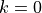.
, 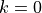.Iterate the following steps until the convergence criterion is met:
Find the gradient 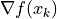 of the function
with respect to the independent variable.Update the independent variable:
 where 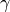 is the learning rate (i.e. the “stride” in one gradient descent).
where 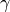 is the learning rate (i.e. the “stride” in one gradient descent).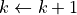.
Next, we consider how to programme to implement the gradient descent method to find the solution of the linear regression 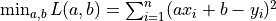.
Linear regression under numPy¶
Implementations of ML models are not preserved for TensorFlow. In fact, simple models can be solved even by using regular scientific computing libraries. Here we use Numpy, the common scientific computing library to implement gradient descent. NumPy provides support for multidimensional arrays, which can represent vectors, matrices and even higher dimensional tensors. Meanwhile, it also provides many functions that support operations on multidimensional arrays (e.g. the following np.dot() evaluates the dot product and np.sum() gets the sum). NumPy and MATLAB are similar in this regard. In the following codes, we will find the partial derivative of the loss function with respect to the parameters a and b manually 4 and use gradient descent iteratively to obtain the values of a and b eventually.
a, b = 0, 0
num_epoch = 10000
learning_rate = 1e-3
for e in range(num_epoch):
# Compute the gradient of the loss function with respect to independent variables (model parameters) manually.
y_pred = a * X + b
grad_a, grad_b = (y_pred - y).dot(X), (y_pred - y).sum()
# Update parameters.
a, b = a - learning_rate * grad_a, b - learning_rate * grad_b
print(a, b)
However, you may have already noticed that there are two pain points for implementing ML models when using conventional scientific computing libraries:
You have to find the partial derivatives with respect to parameters by yourself often. It may be easy for simple functions, but the process would be very painful or even impossible once the functions become complex.
You have to update the parameters according to the result of the derivative by yourself frequently. Here we used gradient descent, the most fundamental approach, thus it was not hard updating parameters. However, the process would have been very complicated if you use more advanced approaches updating parameters (e.g., Adam or Adagrad).
The emergence of DL frameworks such as TensorFlow has largely solved these problems and has brought considerable convenience for implementing ML models.
Linear regression under TensorFlow¶
TensorFlow Eager Execution Mode 5 is quite similar with how NumPy worked above, while it provides a series of features which are rather crucial for deep learning, such as faster computation (GPU support), automatic differentiation, optimizers, etc. The following shows how to use TensorFlow to compute linear regression. You can notice that the structure of the program is very similar with the previous implemention with NumPy. Here TensorFlow helps us accomplished two crucial tasks:
Using
tape.gradient(ys, xs)to compute the gradient automaticallyUsing
optimizer.apply_gradients(grads_and_vars)to update model parameters automatically
X = tf.constant(X)
y = tf.constant(y)
a = tf.Variable(initial_value=0.)
b = tf.Variable(initial_value=0.)
variables = [a, b]
num_epoch = 10000
optimizer = tf.keras.optimizers.SGD(learning_rate=1e-3)
for e in range(num_epoch):
# Use tf.GradientTape() to record information about the gradient of the loss function.
with tf.GradientTape() as tape:
y_pred = a * X + b
loss = 0.5 * tf.reduce_sum(tf.square(y_pred - y))
# TensorFlow computes the gradients of the loss function with respect to independent variables (model parameters) automatically.
grads = tape.gradient(loss, variables)
# TensorFlow updates parameters according to the gradient automatically.
optimizer.apply_gradients(grads_and_vars=zip(grads, variables))
print(a, b)
Here we used the approach mentioned before to compute the partial derivative of the loss function with respect to parameters. Meanwhile, we declared a gradient descent optimizer whose learning rate was 1e-3 by tf.keras.optimizers.SGD(learning_rate=1e-3). The optimizer can help us update model parameters based on the calculated derivative result, thereby minimizing a certain loss function. Specifically, you should call the method apply_gradients() for doing so.
Notice here we needed to provide the parameter grads_and_vars, which were the variables to be updated (like variables in the codes above) and the partial derivatives of the loss function with respect to them (like grads in the codes above), to the method optimizer.apply_gradients() that updated model paramters. Specifically, you need to pass in a Python list here whose elements are (the partial derivative for the variable, the variable) pairs, e.g., [(grad_a, a), (grad_b, b)] in this case. By grads = tape.gradient(loss, variables) we found the partial derivatives of loss with respect to each variable in variables = [a, b] recorded in tape, which are grads = [grad_a, grad_b]. Then we used the zip() function in Python to assemble grads = [grad_a, grad_b] and variables = [a, b] together to get the parameters we needed.
Python zip() function
The zip() function is a built-in function of Python. It would be confounding to describe it with natural language, but it will be much more accessible by giving an example: If a = [1, 3, 5] and b = [2, 4, 6], then zip(a, b) = [(1, 2), (3, 4), ..., (5, 6)]. In other words, it “takes iterable objects as parameters, packs their corresponding elements into tuples and returns a list of these tuples”. In Python 3, the zip() function returns an object, which needs to be converted into a list by calling list().
{kind=link}
In practical applications, the models we code are usually much more complicated than the linear model y_pred = a * X + b (whose paramters are variables = [a, b]) which can be written in a single line. Therefore we will often create and instantiate a model class model = Model(), then use y_pred = model(X) to call it and use model.variables to acquire model parameters. Refer to chapter “TensorFlow Models” for writing model classes.
- 1
In Python an integer can be defined in float type by adding a period after it. E.g.,
3.means the float3.0.- 2
Refer to Tensor Transformations and Math. Notice that tensor operations in TensorFlow are quite similar in form with the popular Python scientific computing library NumPy. You can get started quickly if you have already known about the latter.
- 3
In fact, there has already been an analytical solution of linear regression. We used gradient descent here only for demonstrating how TensorFlow works.
- 4
The loss function here is the mean squared error
 , whose partial derivatives with respect to the parameters
, whose partial derivatives with respect to the parameters aandbare 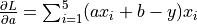 and 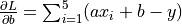.- 5
The opposite of the Eager Execution mode is the Graph Execution mode, which is the primary mode of TensorFlow before version 1.8 published in March 2018. In this handbook we focus on the Eager Execution mode for rapid iterative development, but we will get to the Graph Execution mode in the appendix for readers in need.